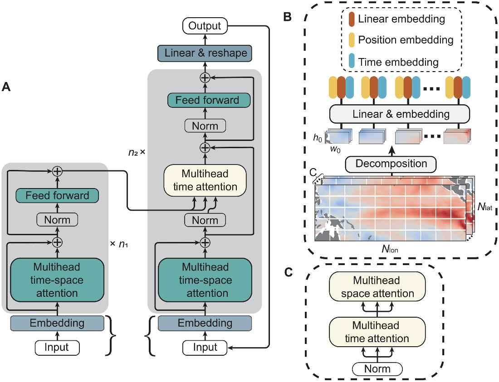

Overview of PDA_OL
Proxies and simulations
1. Proxies are from the Past Global Changes 2k Network (PAGES2k Emile-Geay et al. 2017) with temporal coverage of the Common Era (0-2000 CE) The proxy system model (PSM), i.e., the forward operator, is constructed by a linear univariate model for each kind of proxy, based on annual means / seasonal averages for tree-based proxies and annual means for the other kinds of proxies (Tardif et al. 2019). For the \(p^{th}\) proxy, the PSM is calibrated relative to the NASA Goddard Institute for Space Studies surface temperature analysis (GISTEMP; Hansen et al. 2010), through the linear regression that gives the best fit to the proxy data. The regression residual \(\sigma _p^2\) is used as the observation error variance, i.e., the diagonal element of the diagonal matrix R
2. The model data is from the Community Earth System Model-Last Millennium Ensemble Project (CESM LME; Otto-Bliesner et al., 2016). Ensemble simulations of the CESM LME with full forcing, including the transient evolution of solar intensity, volcanic activity, orbital parameters, changes in land use/land cover and greenhouse gases, give a total of 13 full-forcing simulations from 850 to 2005 CE. For annual mean and seasonal averages, the monthly output is processed by removing the climatology over the entire period.
Surrogate models
The traditional online DA advances the numerical model from the posteriors, and provides priors with flow-dependent uncertainties for next DA cycle. Instead of using numerical models that are computationally expensive, data-driven surrogate models are used here for PDA_OL. Due to the different time scales of proxy records, the PSM requires different seasonal averages. Therefore, the integrate time of the surrogate model is usually the average time scale of the proxies, which is generally 12 months for PAGES2k. Based on this, the surrogate model is designed to take in a continuous 12 months of SAT and SST fields and predict for the subsequent 12 months:
where the superscripts \(f\) and \(a\) denote prior and posterior, respectively. M is a self-attention-based surrogate model (Zhou and Zhang 2023)
The loss function L is defined using the mean square eroor (MSE) of the 12 predictive months and the truth:
DA methods
Different from ensemble priors of offline DA that are randomly sampled from a climatological simulation, ensemble priors \({\bf{x}}_{cyc,i}^f\) (\(i =1,…,N\)) of online DA are short-term forecasts based on the surrogate models. The ensemble mean \({\bf{\bar x}}_{cyc}^f = \left( {1/N} \right)\sum\limits_{i = 1}^N {{\bf{x}}_{cyc,i}^f}\) and ensemble perturbations \({\bf{x'}}_{cyc,i}^f\) (\(i =1,…,N\)) are updated separately, but through the integrated hybrid EnKF (IHEnKF, Lei et al. 2021) that is superior to the commonly used hybrid ensemble-variational method but within a pure ensemble framework.